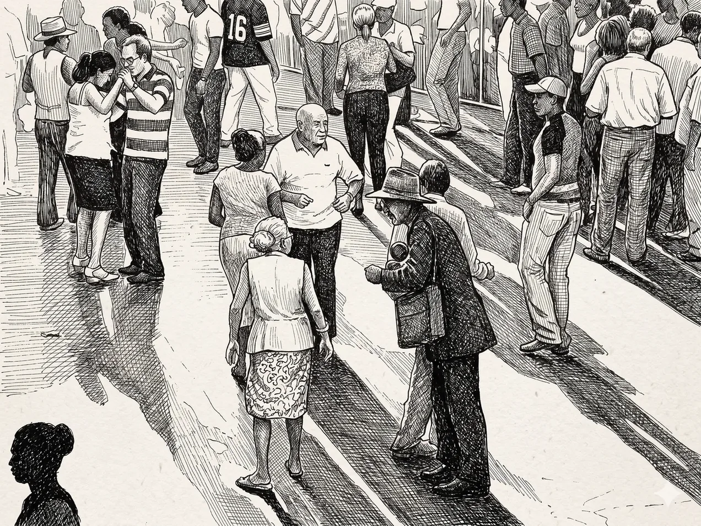

Quiénes somos
Pensamiento Caribe reúne investigadoras, investigadores, jóvenes investigadores e investigadoras y semilleristas comprometidos con una investigación crítica, situada y responsable desde el Caribe Colombiano.
Somos una comparsa de pensamiento y afectos. Singularidades diversas que encuentran resonancia en la síncopa afrocaribe. En la comparsa no se borran las diferencias, pero el sonido las sincroniza en un ritmo. Una cadencia que no clausura la distinción ni la improvisación individual. Somos compas que nos juntamos para pensar y movernos desde nuestra orilla vital.

Investigadoras e Investigadores

Roberto Almanza Hernández
Director · Investigador
Antropólogo, magíster en Estudios Culturales y doctor en Estudios Latinoamericanos. Profesor asociado de la Universidad del Magdalena y director del Grupo de Investigación Pensamiento Caribe. Su obra articula antropología del Caribe, filosofía afrocaribeña y teoría crítica de la raza, con atención sostenida a las vidas negras y el antirracismo en el Caribe Colombiano. Autor de La orilla de Calibán, Premio Casa de las Américas 2023, genealogía crítica de la filosofía afrocaribeña en el siglo XX. Ha impulsado la Semana Antirracista y Decolonial y proyectos de cartografía social y memoria política con comunidades afrocaribeñas del Magdalena Grande.

Margarita Granados
Investigadora externa
Coinvestigadora del proyecto Geografías y memoria política de las vidas negras de la Zona Bananera del Magdalena.

Caridad Brito Ballesteros
Investigadora
Mujer afrocaribeña, historiadora de la Universidad Nacional de Colombia, magíster en Gestión Cultural (Universidad de Barcelona) y doctoranda en Historia en la Universidade Federal de Minas Gerais (Brasil). Docente catedrática del programa de Historia y Patrimonio de la Universidad del Magdalena. Investiga la presencia negra en el Caribe, la historia de las mujeres esclavizadas y la etnoeducación.

Juan Carlos Gómez Blanco
Artista plástico · Investigador
Artista plástico, antropólogo y magíster en Filosofía. Docente e investigador del programa de Antropología y docente en la Licenciatura en Artes de la Universidad del Magdalena. Su trayectoria articula investigación transdisciplinar en los estudios del Caribe —poéticas y políticas de la Negritud, estéticas contemporáneas y epistemologías del Caribe— con investigación-creación artística, habiendo dirigido proyectos sobre patrimonio cultural de las comunidades negras del Caribe colombiano y narrativas contemporáneas en gramáticas e iconografías populares. Su obra ha sido parte de ponencias y exposiciones individuales y colectivas a nivel nacional e internacional.

Deibys Carrasquilla Baza
Investigador
Antropólogo, magíster en Estudios del Caribe y doctor en Ciencias Políticas. Docente e investigador de la Universidad del Magdalena, profundiza en antropología del Caribe, salud intercultural y antropología de la música. Ha participado como ponente en numerosos eventos relacionados con las músicas del Caribe.

Rosa María Chamorro Cuello
Investigadora
Filósofa, poeta, investigadora y docente afrocaribeña. Su trabajo se centra en la historia intelectual afrocolombiana, la literatura afrocolombiana y afrolatinoamericana, los estudios del Caribe y del Pacífico, y las relaciones entre literatura, archivo, memoria e historia. Como autora de poesía, ensayo e investigación histórica, explora las tradiciones intelectuales afrodescendientes y las circulaciones culturales de la diáspora africana en América Latina y el Caribe.

Demetrio Ribeiro De Andrade
Investigador externo
Doctorando en Desarrollo Rural (PGDR/UFRGS, Brasil) y magíster en Ambiente y Sostenibilidad. Integra los grupos ObservaCampos (UERGS) y POLEMHIS (UFRGS), investigando memoria política e inteligencia territorial desde perspectivas contracoloniales. Investigador Externo vinculado al ICANH, desarrolla contracartografías de la memoria política en la Zona Bananera del Magdalena.
Jóvenes Investigadores
Claribel Barros De La Hoz
Joven Investigadora
Antropóloga y estudiante de Maestría en la Universidad del Magdalena. Su trayectoria investigativa se centra en negritud, memorias barriales y procesos de racialización. Explora las dimensiones generizadas del racismo y las estéticas decoloniales desde el Caribe. Participa en la organización de la Semana Antirracista.

Dakna Davraiskí Alvarado Maestre
Joven Investigadora
Antropóloga, técnica en Diseño e Integración de Multimedia y próxima especialista en Derechos Humanos y DIH. Sus intereses se enfocan en la investigación social, la gestión socioambiental y la promoción de los derechos humanos. Ve en la escritura y la lectura bases de la reflexión crítica y el fortalecimiento de la memoria colectiva.

Dayana Granados Hernández
Joven Investigadora
Antropóloga con experiencia en investigación social y gestión comunitaria, especializada en memoria histórica y participación comunitaria. Sus intereses se centran en los estudios afrocaribeños y comunidades negras con enfoque de género. Publicación en la revista Oraloteca sobre costumbres populares y dinámicas de distinción social.
Nombre por confirmar
Joven Investigador/a
Miembros del Semillero

Everleidis Tatiana Dávila Sanabria
Semillerista
Antropóloga de formación, artista callejera e investigadora del Caribe Colombiano. Su trabajo se sitúa desde perspectivas antirracistas y decoloniales, con especial interés en cómo las estructuras de raza-clase configuran las vidas negras en la región Caribe. Explora metodologías de investigación-creación que articulan la antropología audiovisual, la etnografía del dibujo y otras prácticas artísticas. Acompaña procesos comunitarios y de autorreconocimiento de juventudes negras, contribuyendo al diálogo de la memoria negra samaria.

Natalia Mindiola Montero
Semillerista
Estudiante de Antropología en la Universidad del Magdalena. Sus intereses se centran en los estudios afrodescendientes, las estéticas afro y el arte afrocaribeño. Ha participado en procesos de formación sobre los derechos de las mujeres negras. Trenzadora.

Oliver Poveda Pozo
Semillerista
Estudiante de Antropología enfocado en las vidas negras del Caribe y en el análisis crítico de las dinámicas históricas, culturales y raciales que configuran la región. Interesado en el antirracismo, las corporalidades y la música caribeña como campos de expresión y resistencia, y en la reflexión crítica sobre el discurso del desarrollo desde perspectivas situadas del Caribe.